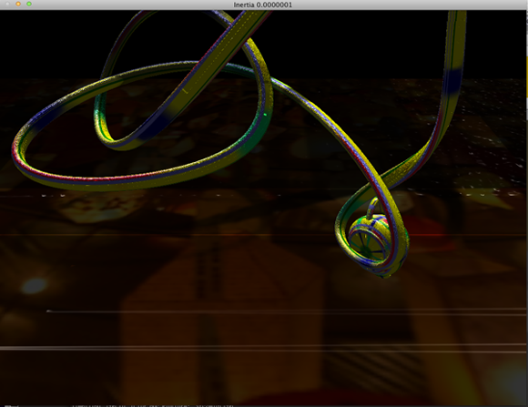
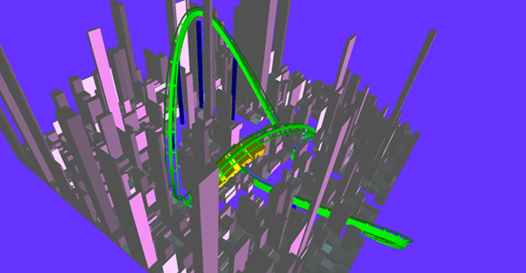
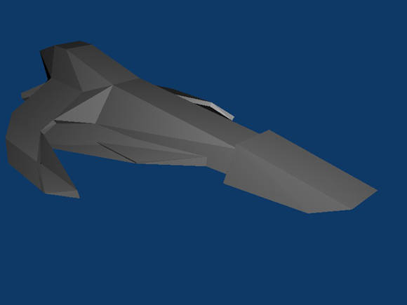
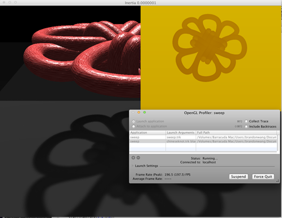

AS11
Revised Final Project Proposal.
Group
Inertia
We propose to create a futuristic racing game reminiscent of F-Zero
for SNES. We plan to utilize the concepts learned in CS184 to
create a modern game with similar gameplay, akin to WipEout HD for PS3 (but with less features).
Technical Challenges
- Allow the user to turn the ship, maintaining a consistent velocity direction
We will address this by allowing the user to control movement only in the tangent plane of the b-sline (essentially "magnetizing" the ship to the track) using their mouse or keyboard, and keeping a velocity vector in world space that will be projected onto tangent space. This allows for a consistent velocity direction while the tangent space basis may change and rotate around the normal axis.
- Procedurally generate the surrounding environment
We will automatically greeble a solid ground to make a city-like surrounding landscape. If time permits, we will generate the environment and track on the fly.
- Implement advanced renderer functions
We will implement a variance shadow map, along with a two-pass Gaussian Blur to achieve soft shadows. If time permits, we will implement crepuscular rays through a post-process render.
Current Progress
AS7 Rollercoaster in AS8

We are currently modifying our AS8 renderer to allow for AS7-like rollercoaster behavior.
Greebling

We are exploring greebled surfaces to procedurally generate an environment.
Ship Model

We made a model of a WipEout-like ship in Blender.
Variance Shadow Mapping

We are currently working on an efficient variance shadow map shader. (This b-spline is highly sampled)